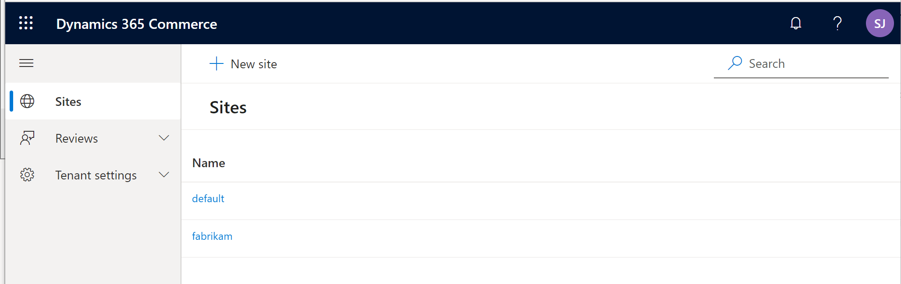
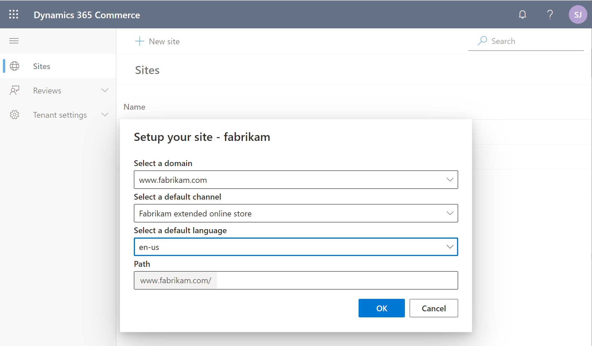
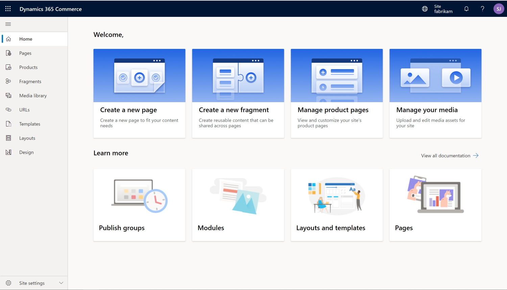
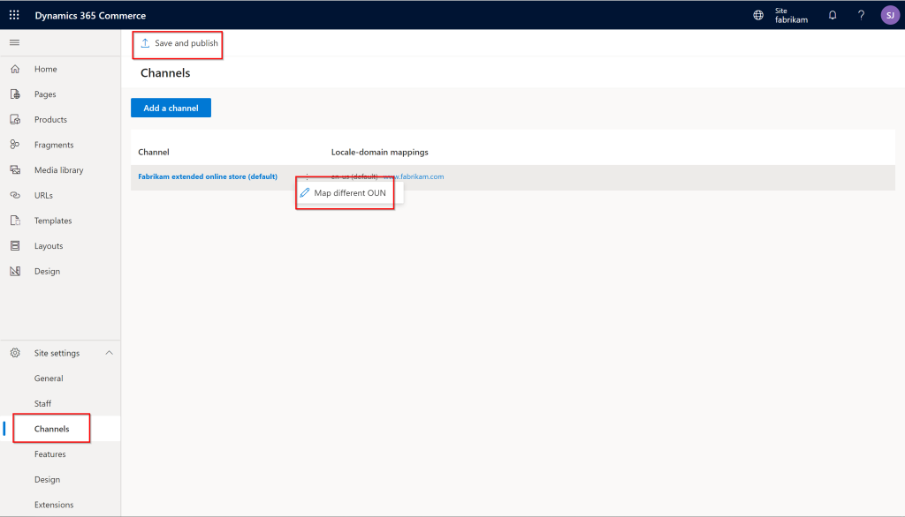
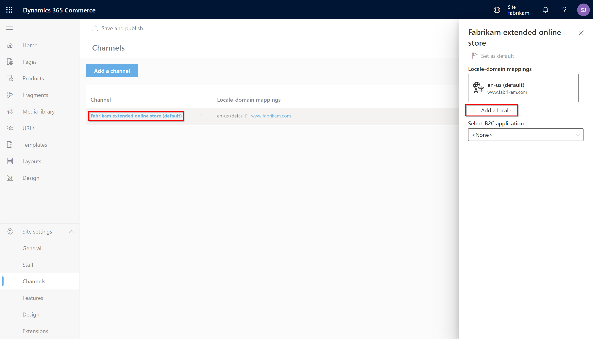

E-commerce site overview
This topic provides an overview of the support for e-commerce sites in Microsoft Dynamics 365 Commerce. It includes information about how e-commerce online stores are initialized and managed in Dynamics 365 Commerce. It also provides links to more information about online stores, and about how to set up and configure an e-commerce site. Although this topic covers many of the basics, it doesn't cover everything that is required to set up a production e-commerce site. More advanced topics can be found in the Dynamics 365 Commerce documentation.
Online store channel
Before you can build your site in Dynamics 365 Commerce, at least one online store channel must be set up. For more information, see Set up an online channel.
In Dynamics 365 Commerce, you use an online store channel to establish the products, pricing, languages, payment methods, delivery modes, fulfillment centers, and other aspects of the online experience that should be available to your customers.
Only one online store channel has to be set up before you can get started with Dynamics 365 Commerce. However, a single e-commerce site can provide the online experience for multiple online stores. For example, if multiple online stores are set up to support different geographical regions, a single set of e-commerce pages can be used to provide the unique experiences that are defined by each store. For more information about how to configure a site to support multiple online stores, see Associate an online site with a channel.
After an online store is set up, it can be associated with the Dynamics 365 Commerce site that will serve as your online storefront. For more information about online stores and how to set them up, see Set up online stores.
Deploy a new e-commerce tenant
During initialization of an e-commerce site, you're prompted for a domain name. For more information about domains in Commerce, see Configure your domain name and Domains in Dynamics 365 Commerce. To deploy a new e-commerce tenant by using Microsoft Dynamics Lifecycle Services (LCS), follow the steps in Deploy a new e-commerce tenant. After your e-commerce tenant is set up in LCS, a link to Commerce site builder will be provided. You can then use Commerce site builder to initialize and configure your e-commerce sites.
Initialize your e-commerce site
When you start Commerce site builder from LCS, the Sites page appears. This page includes two preconfigured sites, default and fabrikam, as shown in the example in the following illustration.

When you select one of these sites, you're prompted to select a domain name, a default online store channel, a supported language for the selected channel, and a path. If only one channel is used, you can leave the path blank. More online store channels or languages can be configured later in Commerce site builder. Each additional channel or language will require a unique path. For example, you have two online channels that are associated with a single site, and the domain name for the site is www.fabrikam.com. In this case, the path for one channel can be the default value that has no path (https://www.fabrikam.com), and the second channel can be set to a new path, such as site2, that will have the URL https://www.fabrikam.com/site2. The following illustration shows an example of a site initialization dialog box in Commerce site builder.

The Sites page also includes a New site button. The dialog box that appears when you select this button resembles the site initialization dialog box, but it's used to create a new site. New sites are blank. They don't include the same default templates, fragments, pages, and images that are provided with the default and fabrikam sites. However, as you require, you can open a support ticket to request that a copy of the default content be added to a new blank site. For more information, see Create an e-commerce site.
After a new site is initialized, the Commerce site builder Home page appears. This page includes links to common actions and guidance content, as shown in the example in the following illustration.

Modify online store channels or add online store channels to an e-commerce site
After an e-commerce site is created, you can change the channel that it's associated with by following the steps in Associate an e-commerce site with an online channel. The example in the following illustration shows how a channel operating unit number (OUN) can be changed on the Channels page (Site settings > Channels). After you've finished making a change, be sure to select Save and publish. In this way, you ensure that the change is published.

You can add new channels by selecting Add a channel. To add new languages to a channel, select the channel, and then select Add a locale in the channel dialog box that appears. Before locales can appear in the dialog box, they must be preconfigured for the online store channel in Commerce headquarters.

Set up an Azure B2C tenant
Dynamics 365 Commerce uses Azure Active Directory (Azure AD) business-to-consumer (B2C) to support user credential and authentication flows. For information about how to set up your Azure B2C tenant, see Set up a B2C tenant in Commerce, Set up custom pages for user sign-ins, and Configure multiple B2C tenants in a Commerce environment.
Overview of the default site pages
The default and fabrikam sites include preconfigured templates, fragments, and pages to help you get started. For more information, see the following topics:
- Home page overview
- Product details page overview
- Cart and checkout pages overview
- Account management pages overview
Manage site settings
For information about how to manage your site settings, see the following topics:
- Manage e-commerce users and roles
- Search engine optimization (SEO) considerations for your site
- Manage Content Security Policy (CSP) (This is an external linThis link was changed due to HTMLfromRepoGenerator)
- Select a site theme
Manage site content
For information about how to manage site content, see the following topics:
- Page model glossary
- Document states and lifecycle
- Templates and layout
- Work with fragments
- Work with modules
- Digital asset management overview
- Module library overview
Additional resources
Associate an online site with a channel
Add support for a content delivery network (CDN)